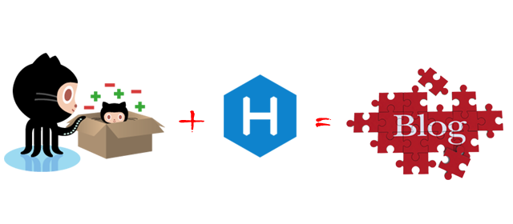
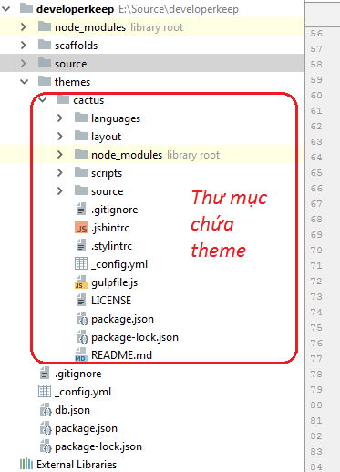
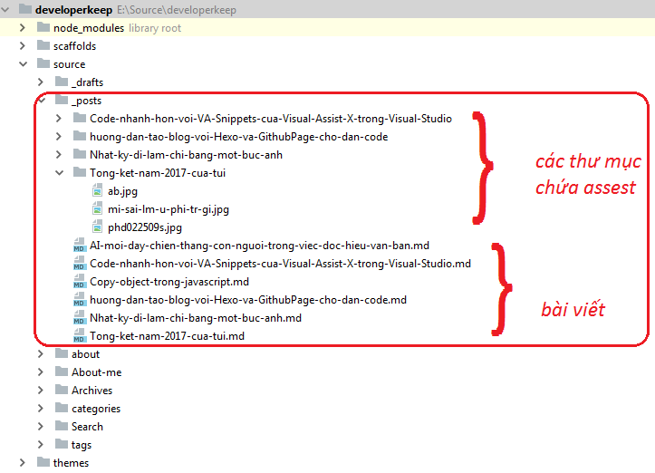
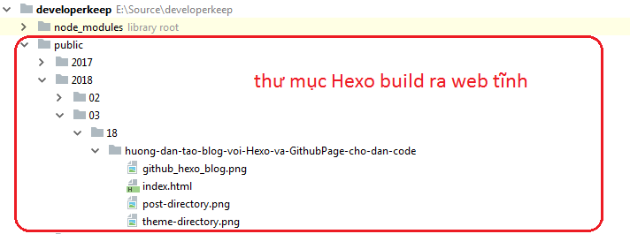

Hướng dẫn tạo blog với Hexo và GithubPage cho dân code

Tại sao dân code nên viết blog?
Ghi nhớ! Blog giống như sổ tay để ta ghi lại mọi thứ hay ho như kiến thức mình học được, câu chuyện cười hoặc là có thể dùng để viết nhật ký.
Blog còn hơn cả sổ tay ở chỗ là có thể đọc qua mạng, dễ dàng share cho bạn bè, người lạ mặt ở trên thế giới có thể tìm đến blog nhờ công cụ tìm kiếm như Google.
Luyện tập diễn giải sự việc theo cách trình bày của chính mình. Mọi vấn đề đều có cách để diễn dãi nó một cách dễ hiểu, nếu bạn không làm được điều đó thì chứng tỏ bạn chưa hiểu vấn đề.
Nhiều lúc khi xem lời giải của một bài toán ta cứ gật gù rằng “đúng rồi, hóa ra đơn giản vậy” thế nhưng khi để tự mình diễn giải lại lời giải đó thì ta không làm được. Đó là do khi bạn đọc lời giải bạn đang đọc “cách hiểu của tác giả” chứ chưa phải là bạn hiểu! Vậy nên cho đến khi bạn đặt bút xuống diễn giải lại được thì lúc đó bạn mới thực sự hiểu lời giải của vấn đề!
- Thể hiện tiếng nói của mình. Nói cách khách là kênh phát ngôn. Ngày nay mạng xã hội phát triển như Facebook có là nơi lý tưởng để viết bài và đó cũng là kênh phát ngôn của bạn. Đối với dân code như mình thì khi follow một người nổi tiếng nào đó trong lĩnh vực IT thì mình thường tìm đến blog của họ thay vì tìm đến trang cá nhân của họ trên mạng xã hội, đơn giản là blog thể hiện tiếng nói và tính cách của họ nhiều hơn là những thứ họ viết trên mạng xã hội.
“Đức” cho người khác. Nếu ai nằm vùng VOZ nhiều thì không lạ gì từ “đức” này mà mỗi khi có một post hay hoặc một post bóc phốt có ảnh là các VOZer vào đọc đầu tiên trong post ấy thường vào “quote” lại bài viết ngay để lỡ bài viết có bị sửa đi thì những người vào sau có thể xem được bài gốc. Đấy gọi là đức, xuất phát từ “làm phúc làm đức” :)
Đối với viết blog cũng là “đức” vì những thứ mình viết lại biết đâu lại giúp ích cho người khác!
3 lý do dân code chọn Hexo và Github Pages
- Đơn giản và quen thuộc đối với dân code. Đối với dân code thì code và commit code thực sự quá quen thuộc. Làm blog với Hexo và Github Pages đơn giản là vì thao tác chính chỉ liên quan đến viết, commit, run lệnh =) mà không phải sử dụng giao diện đồ sộ như Wordpress.
- Nhanh! Bạn có thể deploy blog chỉ khoảng 10 phút cài đặt.
Miễn phí nhưng chất lượng. Cả Hexo và Github Pages đều miễn phí, không tốn một xu. Ngoài ra blog trên Github Page không bị chèn quảng cáo, server trâu của github không sợ bị DDos.
Ngoài ra một lý do mình chọn Hexo cho blog của mình vì framework này chạy trên NodeJs - nền tảng mà mình đã biết. Đối với những ai biết python thì có Pelican hoặc Rubby thì có jekyll, Golang thì có Hugo… cũng tương tự như Hexo - đều là Static Web Generator.
Hướng dẫn tạo blog bằng Hexo và Github Pages
Bản chất đơn giản như sau:
- Github pages là dịch vụ host static web tức là các file html tĩnh và cho luôn bạn tên miền rất đẹp kiểu như developerkeep.github.io. Sau khi đăng ký tài khoản github page thì bạn hoàn toàn tống bất cứ thứ gì đó như html, css, js lên repo của nó thì ta sẽ được 1 trang web tĩnh.”
- Hexo là static web generator tức là thằng xuất blog chạy trên nodejs ra blog dạng tĩnh. Thứ mà Hexo xuất ra này lại có thể đem commit lên Github Pages để host trên đấy và thế là có blog =))’
Cài đặt môi trường
Để chạy được hexo trước tiên bạn cần cài đặt NodeJs, bản nào cũng được nhé. Recommend bản mới nhất nhé =)
Sau khi cài đặt xong ta cài đặt hexo-cli:
$ npm install -g hexo-cli |
Nếu bạn chưa có git thì cài đặt git nhé. Ở bài này mình viết cho dân code mặc định là đã biết sử dụng git. Còn nếu bạn chưa biết git thì tốt hơn bạn nên học sử dụng git với một số thao tác cơ bản trước rồi hãy làm blog theo bài này.
Tạo blog run local
Tạo một thư mục chứa blog của bạn, tại thư mục này chạy lệnh sau để khởi tạo một blog hexo:
$ hexo init <folder> |
Chạy blog ở local:
$ hexo server |
Mở trình duyệt và truy cập địa chỉ http://localhost:4000 để xem kết quả!
Đăng ký Github Pages
Đăng ký Github Pages cực kỳ đơn giản, bạn đăng ký một tài khoản github vd: developerkeep. Thì blog của bạn sẽ có địa chỉ truy cập là http://developerkeep.github.io. Chi tiết xem hướng dẫn trên trang chủ Github Pages.
Sinh web tĩnh và deploy lên github pages
Giả sử bạn đã đăng ký được github page. Bây giờ ta sẽ tạo web tĩnh từ Hexo và deploy lên Github Pages.
Hexo cung cấp một file cấu hình _config.yml ở thư mục gốc của blog. Tại thư mục này ta cấu hình để deploy như sau:
1 | deploy: |
Ta chỉ ra rằng sẽ deploy bằng git và nơi sẽ deploy là repo https://github.com/developerkeep/developerkeep.github.io.git
Cài đặt thư viện hexo-deployer-git để có thể deploy:
$ npm install hexo-deployer-git -save |
Cuối cùng thực hiện deploy bằng lệnh sau:
$ hexo deploy |
Lúc này Hexo sẽ sinh web tĩnh ra và push lên repo của chúng ta đa đăng ký. Xong, bây giờ blog của chúng ta đã có trên github page và có thể truy cập được rồi.
Rất đơn giản phải không!
Hexo theme
Bất cứ Blog framework nào cũng sẽ hỗ trợ theme cho bạn lựa chọn. Hexo cũng vậy, có một tá theme ở đây. Hầu như các theme ở đấy đều miễn phí và mã nguồn mỡ trên github.
Cài đặt theme ra sao? Thư mục theme ở /thư mục gốc/themes. trong thư mục này mỗi thư mục con là một theme. Vậy nên để cài đặt theme mới thì việc đầu tiên là bạn phải clone code theme đó vào thư mục themes của Hexo. Ví dụ mình sử dụng theme cactus thì thư mục sẽ như sau:

Cấu hình để Hexo nhận theme vừa tải về như sau: giả sử bạn vừa tải về theme cactus. Bây giờ mở file _config.yml trong thư mục blog ra. Sử dòng cấu hình theme thành như sau:1
2
3
4
5# Extensions
## Plugins: https://hexo.io/plugins/
## Themes: https://hexo.io/themes/
#theme: landscape
theme: cactus
Ok. Chạy lại hexo server để xem kết quả!
Lưu ý, một điều rất hay ở đây là hexo tách mỗi theme ra thành một project riêng, có package.json riêng, có _config.yaml riêng vì thế rất rõ ràng và tiện lợi, nếu bạn cài đặt theme khác thì chú ý tài liệu của theme để cấu hình theme cho đúng nhé.
Viết bài và public
Phần liên quan nhất tới viết blog, viết ở đâu, ra sao? Hexo hỗ trợ viết bài với định dạng markdown. Khi tạo bài viết mới bằng lệnh:
$ hexo new "hello world" |
Hexo sẽ sinh ra 1 file mang tên hello-world.md ở thư mục /source/_post và thư mục chứa assest của post đó là /source/_post/hello-world/. Khi bạn viết nhiều bài, thư mục bài viết của bạn sẽ kiểu như sau:

Để có thể viết bài thì bạn chỉ cần mở file .md đó bằng bất cứ trình soạn thảo markdown nào cũng được hoặc là notepad++ =))
Bạn nên xem qua hướng dẫn trên trang chủ của hexo về format viết bài.
Public bài như thế nào? wow đây là việc cuối cùng cần làm để đưa bài viết lên Github pages và có thể share cho bạn bè đọc rồi. Đơn giản, bạn chỉ cần chạy lại lệnh deploy hexo deploy thì hexo sẽ tự động làm việc đó cho bạn.
Bản chất thì hexo sẽ sinh ra file .html tĩnh tương ứng với bài viết .md của bạn.

Sau khi sinh ra file html tĩnh thì hexo mang đống này commit lên Github pages. Như vậy là xong quá trình deploy.
Có một điều mình thích ở hexo là giúp đơn giản hóa quá trình viết bài, ngày xưa mình viết trên wordpress phải tải ảnh từng cái từng cái, xong rồi chỉnh link cho đúng, mà sửa online chứ không sửa local nên bất tiện là load rất chậm. Còn với Github pages thì mình chỉ cần cho vào thư mục asset mà Hexo đã sinh ra, khi deploy thì chỉ cần 1 câu lệnh là toàn bộ ảnh được upload lên luôn.
Nhanh mà thuận tiện.
Một điều nữa là việc lưu trữ mã nguồn và rất là ưa đó là viết bài và test bài viết nhanh chóng ở local, code mã nguồn cũng có thể cất giữ cẩn thận trên gitlab với chế độ private. Còn phần sinh ra static web thì public lên Github pages rất gọn nhẹ tiện dụng.
Xong! Cuối cùng thì cũng kết bài =))
Nếu bạn đã từng muốn làm cho mình một blog nhưng ngại cài đặt thì bây giờ bạn còn chờ gì nữa mà không lao vào thử luôn với Hexo và Github Page. Nếu có khó khăn thì hãy comment ở dưới mình sẽ hỗ trợ bạn. Chúc bạn thành công!